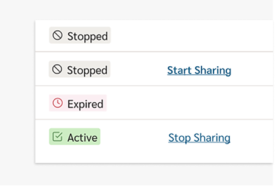

Defining a compliant, user-centered experience by aligning product, engineering, and design system constraints.
The Problem
Federal compliance requirements introduced new member-facing workflows for managing PHI sharing, requiring alignment between legal, engineering, and legacy platform constraints.
- Multiple actors
- Asynchronous data delays
- Visibility of system status unclear
- Legal copy visibility required
Key Considerations
Context

Members needed a clear way to see which third-party apps were accessing their protected health information, understand each app’s status, and stop sharing when needed. The page also had to include a large amount of required legal copy above the table, keep all actions on a single page, and use only existing components. I simplified this compliance-heavy experience while keeping the interface easy to scan and act on.
Design Constraints
- Limited design and development budget
- Required legal copy must remain visible at all times
- Scan, review, and modify app-sharing data with minimal actions
ResultRedesigned a simplified interface into a structured solution where a member's app statuses could be scanned, updated, and managed while maintaining required legal disclosures.
Constraints
Visual design was limited by system + org realities. As part of the discovery phase, I designed initial UI concepts for the member audit experience to test feasibility and shape the user journey. I also validated UI states and accessibility, helping surface technical constraints and edge cases that informed the compliant-state direction that followed.
Design Constraints
- Legacy table required (no new components)
- Fixed typography + deprecated UI kit
- Backend dependencies blocked real-time accuracy
- Audit visibility tied to login state
- No funding for redesign
ResultSolution had to work within, not around, tight enterprise constraints
Challenge
In order to meet strict design requirements within a legal deadline with limited patterns and components, an accessible and legacy UI kit validated pattern was used (table) to give members quick legibility of all data in a limited area and ownership of taking actions.
Components used: Badge (to easily scan app status), along with variable name + timestamp (who took the action in multi-user scenarios).
Requirements:
- Show current state vs pending state
- Clarify who took action (member vs rep)
- Indicate delays without breaking confidence
- Keep legal content always accessible
GoalBuild user trust in taking actions with their sensitive personal data
User Flows
Mapped role-based behavior across scenarios. The complete user flow was shaped through alignment with cross functional teams to understand role-based state behavior and access to real-time data following user actions. As a result, a simplified user variable and timestamp solution bridged the complexity of syncing user and API data on the back end, enabling an accurate and seamless reflection of action states on the web front end.
Design choices considered:
- Member vs personal representative flows
- Visibility changes based on login state
- Action ownership not always shared across users
- System delay vs. perceived control (edge case)
ResultComplexity lived in role-based state behavior.
Solution
As the visual designer, I partnered with Product, Compliance, and Engineering throughout PI planning and Agile sprints to define feasible UI solutions that balanced regulatory requirements, technical constraints, and design system consistency. That context shaped a structured, simplified interface that allows members to quickly scan which apps are accessing their sensitive PHI and manage permissions through simple controls. Every decision was grounded in the realities the design needed to satisfy, including federally required legal visibility, ensuring the experience remained clear, compliant, and avoided the risks of premature design decisions.
Product alignment:
- Reorganized table for scanability
- Grouped actions + status together
- Introduced clearer status labeling (within constraints)
- Reduced cognitive load through structure, not visuals
- Maintained compliance + system integrity
ResultImproved clarity and control of PHI data sharing within strict cross-functional and federally required constraints.
Design Walkthrough
The following visuals describe the process of making design decisions.
{kind=link}
{kind=link}
{kind=link}
{kind=link}
{kind=link}
{kind=link}
{kind=link}
Reflection
This project reflects how I often worked at Florida Blue. As the lead designer on this initiative, I partnered closely with UX, product, compliance, content, and engineering to translate complex requirements into clear, scalable product interfaces. On this effort, I used hierarchy, spacing, status indicators, and structured content to design a system that made sensitive data-sharing information easy to understand while aligning with business goals and compliance requirements.
“Strong visual design is not decoration. In regulated product spaces, it becomes the structure that helps users understand risk, trust the system, and take action with confidence.”